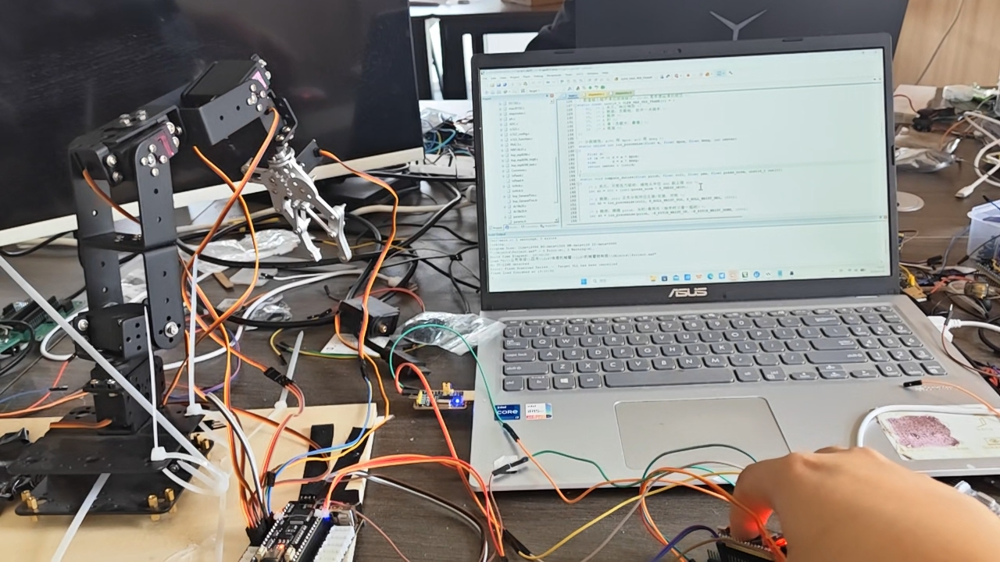

K210板载摄像头实时进行颜色学习与色块追踪，坐标经EMA指数滤波平滑后通过UART发送至STM32， 增量式PID算法精准驱动四路舵机，机械臂持续追随目标物体运动。支持RGB灯带与蜂鸣器扩展。

板载摄像头支持颜色学习模式，通过blob检测算法实时追踪画面中最大色块的坐标与面积。
基于偏差的增量式PID算法，输出平滑稳定、响应迅速，有效避免积分饱和与超调震荡。
对色块坐标进行指数移动平均滤波，平滑原始数据中的噪声抖动，提升追踪稳定性。
四路PWM舵机分别控制底座旋转、俯仰角度与夹爪，实现三维空间内的目标跟踪运动。
K210视觉端与STM32控制端通过UART串口通信，115200bps高速传输坐标数据帧。
支持RGB灯带状态指示与蜂鸣器声音反馈，追踪锁定/丢失时提供直观的视听提示。
| 视觉处理 | K210 — 双核 RISC-V 64bit / 400MHz |
| 主控芯片 | STM32 系列 |
| 摄像头帧率 | 30 fps (QVGA) |
| 追踪算法 | 颜色学习 + blob 检测 + EMA 滤波 |
| 控制算法 | 增量式 PID (Kp / Ki / Kd 可调) |
| 舵机通道 | 4 路 PWM 舵机 (0°–180°) |
| 通信协议 | UART — 115200 bps |
| 扩展外设 | RGB 灯带、蜂鸣器、舵机扩展接口 |
| 供电 | 5V USB / 锂电池组 |